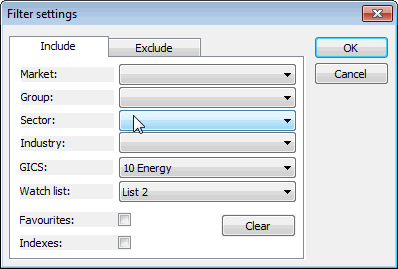

This window is available from the "Filter/Define..." button in quick-review and analysis windows.
The filtering option gives you the ability to narrow your search to symbols belonging to the specified market, group, sector, and industry. You can also choose to include only favourites or indexes. You can use an include and/or exclude type filter, so you can also selectively exclude some types of symbols.
If you use more than one category (for example, you select Market and Sector), the filter will pass only those symbols that match both the first AND second categories (this is a logical conjunction, not an alternative)
